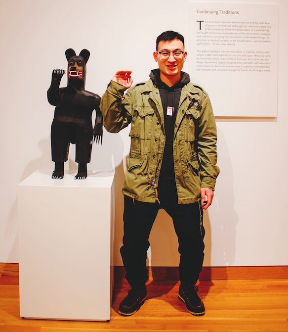

Ph. D. Candidate in Computer Science
Kent State University
Contact:
Department of Computer Science
Kent State University
Kent, OH 44240
Hosted on GitHub Pages — Theme by orderedlist

I am currently an Ph. D. Student in Computer Science at the Kent State University . I graduated with a Master degree in IC Engineering from University of Chinese Academy of Sciences (UCAS) in May 2017.
My research interests include:
Resilience of High-Performance Computing (HPC) system,log analysis of HPC applicatioins;
Software analysis including: Program language, compiler, control flow analysis, symbolic execution;
Cloud computing: Reliability, security, and IaaS etc;
Reliability in Computer Vision.